Show the code
pacman::p_load(spdep, tmap, sf, ClustGeo,
ggpubr, cluster, factoextra, NbClust,
heatmaply, corrplot, psych, tidyverse, GGally)Delineating ICT regions across the townships of Shan State, Myanmar
This exercise groups the 55 townships of Shan State in Myanmar into regions with similar access to information and communication technology. The grouping uses six household ICT measures from the 2014 census, radio, television, land line phone, mobile phone, computer and internet at home.
Planners often want regions that are both homogeneous and joined together on the map. Ordinary cluster analysis only looks at the first condition. The second half of the exercise adds the map back in, first with SKATER, which cuts a minimum spanning tree of neighbouring townships, and then with ClustGeo, which lets me choose how much weight geography gets.
The work is split into six parts. Part 1 explores the variables with charts and choropleth maps, Part 2 checks correlations, and Part 3 runs hierarchical clustering. Part 4 and Part 5 cover the two spatially constrained methods, and Part 6 profiles the clusters.
Two datasets come from the Myanmar Information Management Unit (MIMU).
The first is myanmar_township_boundaries, an ESRI shapefile with the polygon boundary of every township in Myanmar. The second is Shan-ICT.csv, an extract of the 2014 Myanmar Population and Housing Census at township level. It has the number of households in each township and the number that own each of the six ICT items.
I put the shapefile in data/geospatial and the csv in data/aspatial, and added an empty data/rds folder for the intermediate files. The notes use chap12/data/..., and I changed every path to match this folder layout.
pacman::p_load(spdep, tmap, sf, ClustGeo,
ggpubr, cluster, factoextra, NbClust,
heatmaply, corrplot, psych, tidyverse, GGally)The packages fall into five groups. sf and spdep handle the spatial data, and tidyverse covers readr, dplyr, tidyr and ggplot2 for the attribute data. tmap draws the choropleth maps. corrplot, ggpubr, heatmaply, psych and GGally are used to visualise the variables, and cluster, factoextra, NbClust and ClustGeo run the cluster analysis.
The package list in the notes mentions rgdal. It was retired from CRAN in 2023, and sf now does all of its reading and writing work, so I left it out. The p_load() call in the notes already does not include it.
st_read() reads the whole country. I keep only the three parts of Shan State and the six columns from state name to township code.
shan_sf <- st_read(dsn = "data/geospatial",
layer = "myanmar_township_boundaries") %>%
filter(ST %in% c("Shan (East)", "Shan (North)", "Shan (South)")) %>%
select(c(2:7))Reading layer `myanmar_township_boundaries' from data source
`D:\mengtingyu88\geospatial-coursework\Hands-on_Ex\Hands-on_Ex06\data\geospatial'
using driver `ESRI Shapefile'
Simple feature collection with 330 features and 14 fields
Geometry type: MULTIPOLYGON
Dimension: XY
Bounding box: xmin: 92.17275 ymin: 9.671252 xmax: 101.1699 ymax: 28.54554
Geodetic CRS: WGS 84The full layer has 330 townships and 15 fields in WGS 84. After filtering there are 55 townships, 24 in Shan (North), 21 in Shan (South) and 10 in Shan (East).
shan_sfSimple feature collection with 55 features and 6 fields
Geometry type: MULTIPOLYGON
Dimension: XY
Bounding box: xmin: 96.15107 ymin: 19.29932 xmax: 101.1699 ymax: 24.15907
Geodetic CRS: WGS 84
First 10 features:
ST ST_PCODE DT DT_PCODE TS TS_PCODE
1 Shan (North) MMR015 Mongmit MMR015D008 Mongmit MMR015017
2 Shan (South) MMR014 Taunggyi MMR014D001 Pindaya MMR014006
3 Shan (South) MMR014 Taunggyi MMR014D001 Ywangan MMR014007
4 Shan (South) MMR014 Taunggyi MMR014D001 Pinlaung MMR014009
5 Shan (North) MMR015 Mongmit MMR015D008 Mabein MMR015018
6 Shan (South) MMR014 Taunggyi MMR014D001 Kalaw MMR014005
7 Shan (South) MMR014 Taunggyi MMR014D001 Pekon MMR014010
8 Shan (South) MMR014 Taunggyi MMR014D001 Lawksawk MMR014008
9 Shan (North) MMR015 Kyaukme MMR015D003 Nawnghkio MMR015013
10 Shan (North) MMR015 Kyaukme MMR015D003 Kyaukme MMR015012
geometry
1 MULTIPOLYGON (((96.96001 23...
2 MULTIPOLYGON (((96.7731 21....
3 MULTIPOLYGON (((96.78483 21...
4 MULTIPOLYGON (((96.49518 20...
5 MULTIPOLYGON (((96.66306 24...
6 MULTIPOLYGON (((96.49518 20...
7 MULTIPOLYGON (((97.14738 19...
8 MULTIPOLYGON (((96.94981 22...
9 MULTIPOLYGON (((96.75648 22...
10 MULTIPOLYGON (((96.95498 22...glimpse(shan_sf)Rows: 55
Columns: 7
$ ST <chr> "Shan (North)", "Shan (South)", "Shan (South)", "Shan (South)…
$ ST_PCODE <chr> "MMR015", "MMR014", "MMR014", "MMR014", "MMR015", "MMR014", "…
$ DT <chr> "Mongmit", "Taunggyi", "Taunggyi", "Taunggyi", "Mongmit", "Ta…
$ DT_PCODE <chr> "MMR015D008", "MMR014D001", "MMR014D001", "MMR014D001", "MMR0…
$ TS <chr> "Mongmit", "Pindaya", "Ywangan", "Pinlaung", "Mabein", "Kalaw…
$ TS_PCODE <chr> "MMR015017", "MMR014006", "MMR014007", "MMR014009", "MMR01501…
$ geometry <MULTIPOLYGON [°]> MULTIPOLYGON (((96.96001 23..., MULTIPOLYGON (((…shan_sf is an sf data frame, so it works with dplyr verbs and glimpse() like any tibble. All six attribute columns are character, and the geometry is MULTIPOLYGON in degrees.
ict <- read_csv("data/aspatial/Shan-ICT.csv")summary(ict) District Pcode District Name Township Pcode Township Name
Length:55 Length:55 Length:55 Length:55
Class :character Class :character Class :character Class :character
Mode :character Mode :character Mode :character Mode :character
Total households Radio Television Land line phone
Min. : 3318 Min. : 115 Min. : 728 Min. : 20.0
1st Qu.: 8711 1st Qu.: 1260 1st Qu.: 3744 1st Qu.: 266.5
Median :13685 Median : 2497 Median : 6117 Median : 695.0
Mean :18369 Mean : 4487 Mean :10183 Mean : 929.9
3rd Qu.:23471 3rd Qu.: 6192 3rd Qu.:13906 3rd Qu.:1082.5
Max. :82604 Max. :30176 Max. :62388 Max. :6736.0
Mobile phone Computer Internet at home
Min. : 150 Min. : 20.0 Min. : 8.0
1st Qu.: 2037 1st Qu.: 121.0 1st Qu.: 88.0
Median : 3559 Median : 244.0 Median : 316.0
Mean : 6470 Mean : 575.5 Mean : 760.2
3rd Qu.: 7177 3rd Qu.: 507.0 3rd Qu.: 630.5
Max. :48461 Max. :6705.0 Max. :9746.0 The table has 11 fields and 55 rows, one per township. Four fields are identifiers and seven are counts of households. Every count is strongly right skewed. Total households range from 3,318 to 82,604, and the mean of 18,369 sits well above the median of 13,685.
The raw counts mostly measure how big a township is. A township with many households will also have many households with a radio, and that says nothing about how common radios are there. I divided each count by the total number of households and multiplied by 1,000 to get the number of owning households per thousand.
ict_derived <- ict %>%
mutate(`RADIO_PR` = `Radio`/`Total households`*1000) %>%
mutate(`TV_PR` = `Television`/`Total households`*1000) %>%
mutate(`LLPHONE_PR` = `Land line phone`/`Total households`*1000) %>%
mutate(`MPHONE_PR` = `Mobile phone`/`Total households`*1000) %>%
mutate(`COMPUTER_PR` = `Computer`/`Total households`*1000) %>%
mutate(`INTERNET_PR` = `Internet at home`/`Total households`*1000) %>%
rename(`DT_PCODE` =`District Pcode`,`DT`=`District Name`,
`TS_PCODE`=`Township Pcode`, `TS`=`Township Name`,
`TT_HOUSEHOLDS`=`Total households`,
`RADIO`=`Radio`, `TV`=`Television`,
`LLPHONE`=`Land line phone`, `MPHONE`=`Mobile phone`,
`COMPUTER`=`Computer`, `INTERNET`=`Internet at home`) summary(ict_derived) DT_PCODE DT TS_PCODE TS
Length:55 Length:55 Length:55 Length:55
Class :character Class :character Class :character Class :character
Mode :character Mode :character Mode :character Mode :character
TT_HOUSEHOLDS RADIO TV LLPHONE
Min. : 3318 Min. : 115 Min. : 728 Min. : 20.0
1st Qu.: 8711 1st Qu.: 1260 1st Qu.: 3744 1st Qu.: 266.5
Median :13685 Median : 2497 Median : 6117 Median : 695.0
Mean :18369 Mean : 4487 Mean :10183 Mean : 929.9
3rd Qu.:23471 3rd Qu.: 6192 3rd Qu.:13906 3rd Qu.:1082.5
Max. :82604 Max. :30176 Max. :62388 Max. :6736.0
MPHONE COMPUTER INTERNET RADIO_PR
Min. : 150 Min. : 20.0 Min. : 8.0 Min. : 21.05
1st Qu.: 2037 1st Qu.: 121.0 1st Qu.: 88.0 1st Qu.:138.95
Median : 3559 Median : 244.0 Median : 316.0 Median :210.95
Mean : 6470 Mean : 575.5 Mean : 760.2 Mean :215.68
3rd Qu.: 7177 3rd Qu.: 507.0 3rd Qu.: 630.5 3rd Qu.:268.07
Max. :48461 Max. :6705.0 Max. :9746.0 Max. :484.52
TV_PR LLPHONE_PR MPHONE_PR COMPUTER_PR
Min. :116.0 Min. : 2.78 Min. : 36.42 Min. : 3.278
1st Qu.:450.2 1st Qu.: 22.84 1st Qu.:190.14 1st Qu.:11.832
Median :517.2 Median : 37.59 Median :305.27 Median :18.970
Mean :509.5 Mean : 51.09 Mean :314.05 Mean :24.393
3rd Qu.:606.4 3rd Qu.: 69.72 3rd Qu.:428.43 3rd Qu.:29.897
Max. :842.5 Max. :181.49 Max. :735.43 Max. :92.402
INTERNET_PR
Min. : 1.041
1st Qu.: 8.617
Median : 22.829
Mean : 30.644
3rd Qu.: 41.281
Max. :117.985 Six new fields now sit at the end of the table, RADIO_PR, TV_PR, LLPHONE_PR, MPHONE_PR, COMPUTER_PR and INTERNET_PR. Television is the most common item, with a median of 517 households per thousand. Computers and home internet are rare, with medians of 19 and 23 per thousand.
A histogram shows the overall shape of a variable, and a boxplot picks out outliers. I started with the raw count of households with a radio.
ggplot(data=ict_derived,
aes(x=`RADIO`)) +
geom_histogram(bins=20,
color="black",
fill="light blue")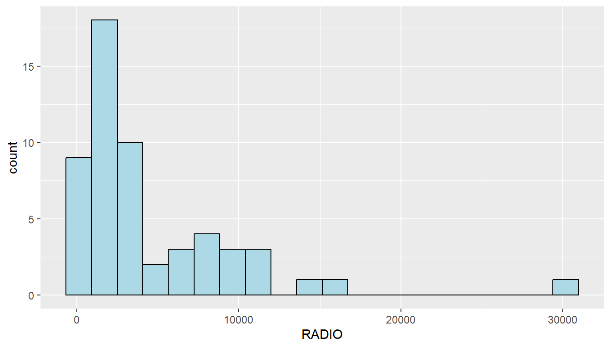
ggplot(data=ict_derived,
aes(x=`RADIO`)) +
geom_boxplot(color="black",
fill="light blue")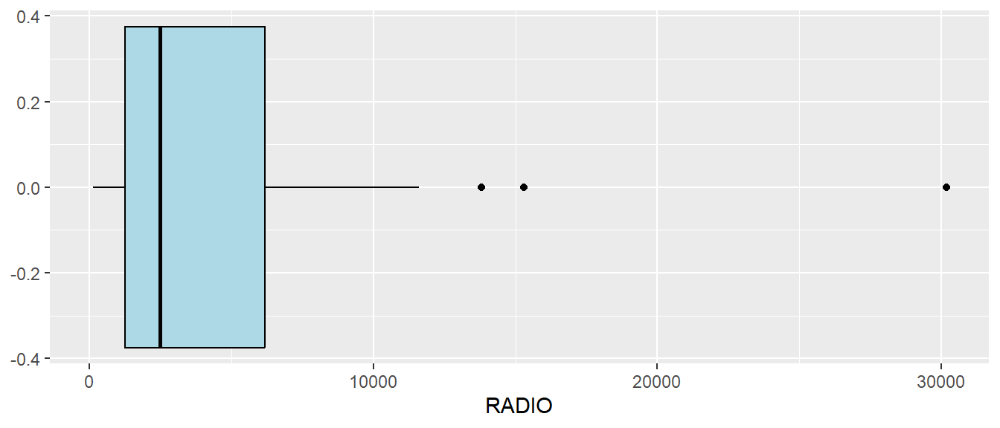
The count is heavily right skewed, with a skewness of about 2.6. Three quarters of the townships have fewer than 6,200 radio households, and three outliers sit far to the right, Taunggyi with 30,176, Lashio with 15,307 and Nyaungshwe with 13,801. These are also among the four townships with the most households.
Next I plotted the radio penetration rate.
ggplot(data=ict_derived,
aes(x=`RADIO_PR`)) +
geom_histogram(bins=20,
color="black",
fill="light blue")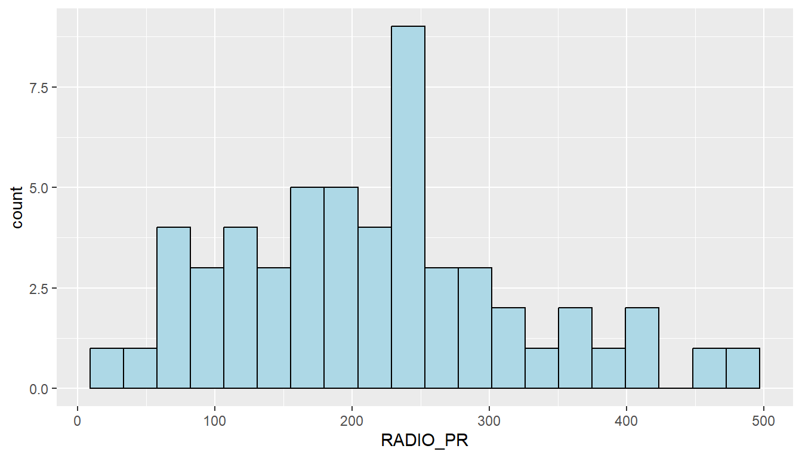
ggplot(data=ict_derived,
aes(x=`RADIO_PR`)) +
geom_boxplot(color="black",
fill="light blue")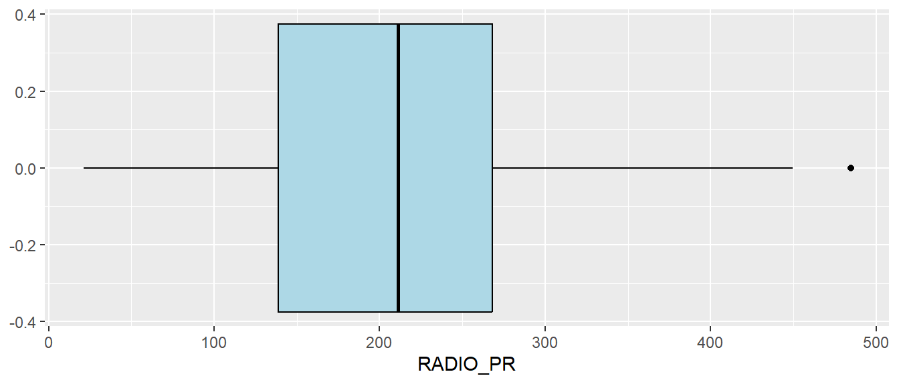
The course asks what the two distributions reveal. Dividing by households removes most of the skew. RADIO_PR has a mean of 216 and a median of 211 per thousand, and its skewness drops to 0.48. The boxplot now flags only one outlier, Ywangan, where 485 of every thousand households own a radio. Taunggyi, the largest outlier in the raw counts, has a rate of 365 and sits inside the whiskers, so its earlier position came from size alone.
I drew one histogram for each rate and arranged them with ggarrange() from ggpubr.
radio <- ggplot(data=ict_derived,
aes(x= `RADIO_PR`)) +
geom_histogram(bins=20,
color="black",
fill="light blue")
tv <- ggplot(data=ict_derived,
aes(x= `TV_PR`)) +
geom_histogram(bins=20,
color="black",
fill="light blue")
llphone <- ggplot(data=ict_derived,
aes(x= `LLPHONE_PR`)) +
geom_histogram(bins=20,
color="black",
fill="light blue")
mphone <- ggplot(data=ict_derived,
aes(x= `MPHONE_PR`)) +
geom_histogram(bins=20,
color="black",
fill="light blue")
computer <- ggplot(data=ict_derived,
aes(x= `COMPUTER_PR`)) +
geom_histogram(bins=20,
color="black",
fill="light blue")
internet <- ggplot(data=ict_derived,
aes(x= `INTERNET_PR`)) +
geom_histogram(bins=20,
color="black",
fill="light blue")ggarrange(radio, tv, llphone, mphone, computer, internet,
ncol = 3,
nrow = 2)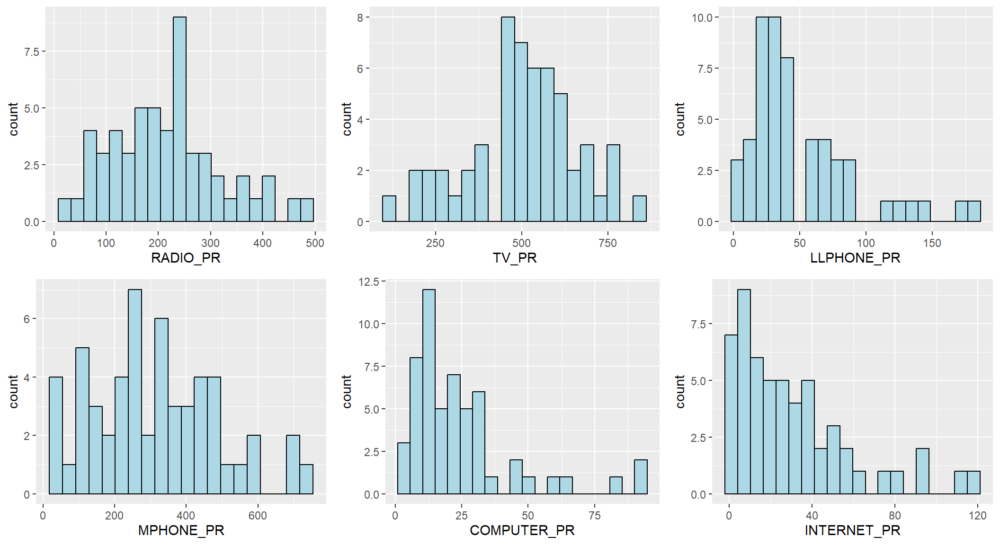
The six rates fall into two shapes. Radio, television and mobile phone are roughly bell shaped, with television slightly skewed to the left (skewness -0.38). Land line phone, computer and internet are right skewed, with skewness between 1.3 and 1.8, because most townships have very low rates and a handful have much higher ones.
The choropleth maps need the rates attached to the polygons. left_join() keeps shan_sf as the base, so the result is still an sf object, and adds the columns of ict_derived by matching TS_PCODE.
shan_sf <- left_join(shan_sf,
ict_derived, by=c("TS_PCODE"="TS_PCODE"))
write_rds(shan_sf, "data/rds/shan_sf.rds")All 55 township codes match in both directions, so no township is dropped or left without data.
The notes mention a message naming the join field. With by written out there is no message. Both tables have DT, DT_PCODE and TS columns besides the key, so dplyr keeps both copies and adds the suffixes .x and .y. I checked that TS.x and TS.y hold the same township name in all 55 rows. That is why the later code refers to TS.x.
shan_sf <- read_rds("data/rds/shan_sf.rds")qtm() gives a quick map with default settings.
qtm(shan_sf, "RADIO_PR")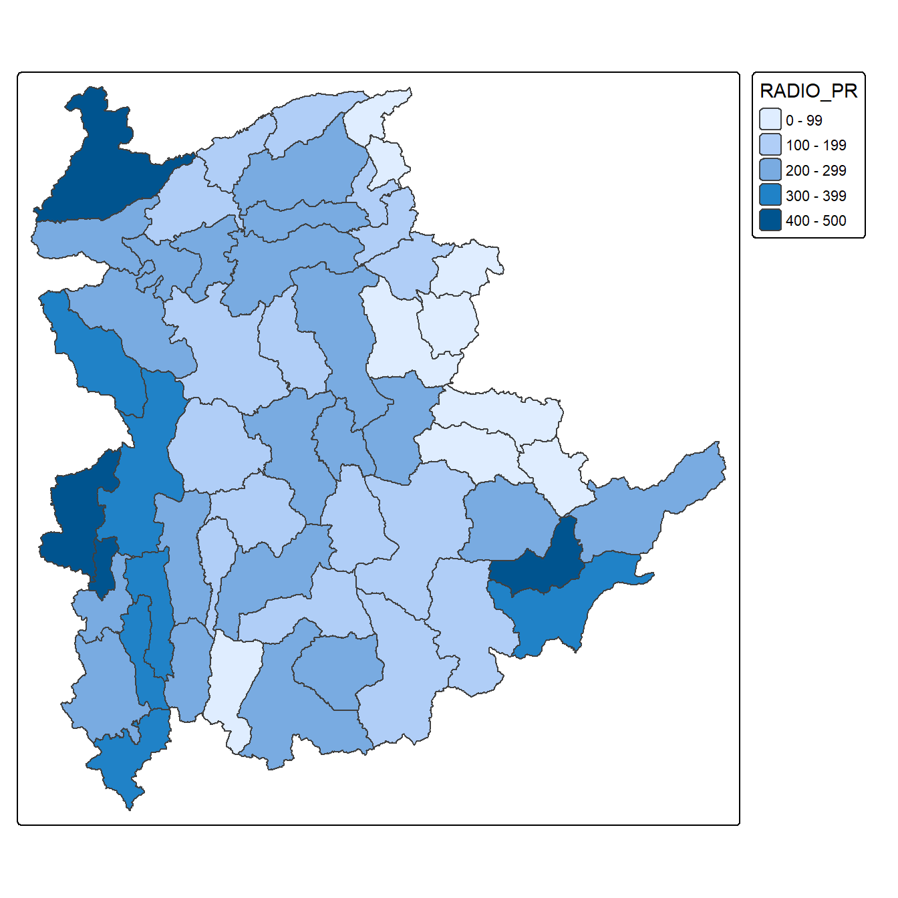
Radio ownership is highest in the west of Shan South and Shan North. Ywangan, Pindaya and Lawksawk near Taunggyi and Mabein in the north west all exceed 380 per thousand. The lowest rates are in the north east along the Chinese border, Konkyan and Laukkaing in the Kokang area at 21 and 53, and Narphan and Pangwaun in the Wa area at about 75.
To show how much the counts depend on township size, I mapped total households next to the number of radio households. The notes use tmap v3 syntax here, and I translated it to v4, where the classification goes into tm_scale_intervals().
TT_HOUSEHOLDS.map <- tm_shape(shan_sf) +
tm_polygons(fill = "TT_HOUSEHOLDS",
fill.scale = tm_scale_intervals(
style = "jenks",
n = 5),
fill.legend = tm_legend(
title = "Total households")) +
tm_borders(col_alpha = 0.5)
RADIO.map <- tm_shape(shan_sf) +
tm_polygons(fill = "RADIO",
fill.scale = tm_scale_intervals(
style = "jenks",
n = 5),
fill.legend = tm_legend(
title = "Number Radio")) +
tm_borders(col_alpha = 0.5)
tmap_arrange(TT_HOUSEHOLDS.map, RADIO.map,
asp=NA, ncol=2)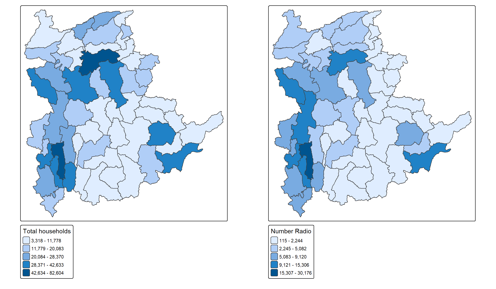
The two maps look almost the same. Taunggyi and Lashio are in the top class on both, and the correlation between total households and radio households across the 55 townships is 0.94.
Next I put total households next to the rate. The notes do this with two variables in one tm_polygons() call and tm_facets(sync = TRUE). In v4, a vector of variables in fill already produces facets, and fill.free = TRUE gives each one its own Jenks classes.
tm_shape(shan_sf) +
tm_polygons(fill = c("TT_HOUSEHOLDS", "RADIO_PR"),
fill.scale = tm_scale_intervals(
style = "jenks"),
fill.free = TRUE,
fill.legend = tm_legend(
position = tm_pos_in("right", "bottom"))) +
tm_facets(ncol = 2) +
tm_layout(outer.margins = 0, asp = 0)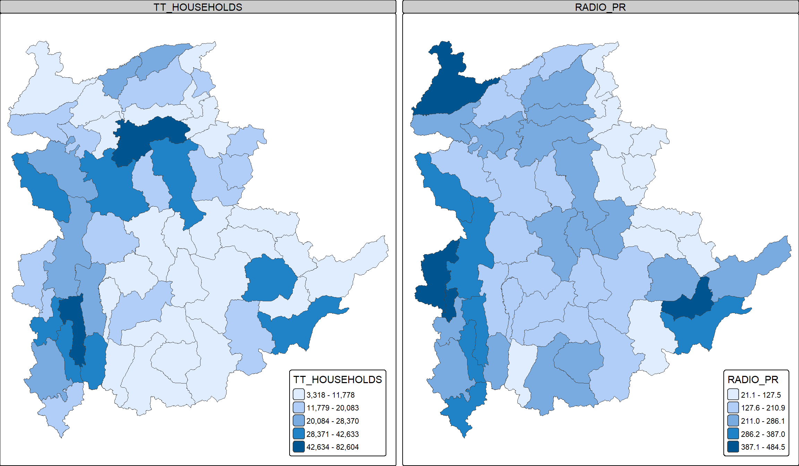
Three changes were needed for tmap 4.4. tm_fill(col = ..., n = 5, style = "jenks", title = ...) became tm_polygons(fill = ..., fill.scale = tm_scale_intervals(style = "jenks", n = 5), fill.legend = tm_legend(title = ...)). tm_borders(alpha = 0.5) became tm_borders(col_alpha = 0.5), since a border is a line. tm_legend(legend.position = ...) was replaced by a position inside the fill.legend argument.
The course asks whether I can see the differences. The rate map breaks the link with size. Taunggyi, the largest township, drops to the fourth of five classes for RADIO_PR, and Lashio, the second largest, falls to the middle class at 236 per thousand. Small townships such as Mabein (8,632 households) and Monghpyak (6,165) move into the top class. The correlation between total households and RADIO_PR is only 0.34, which confirms that the rate measures something different from size.
Cluster analysis treats each variable as a separate dimension. Two variables that carry almost the same information would count that information twice, so I checked the correlations between the six rates first.
cluster_vars.cor = cor(ict_derived[,12:17])
corrplot.mixed(cluster_vars.cor,
lower = "ellipse",
upper = "number",
tl.pos = "lt",
diag = "l",
tl.col = "black")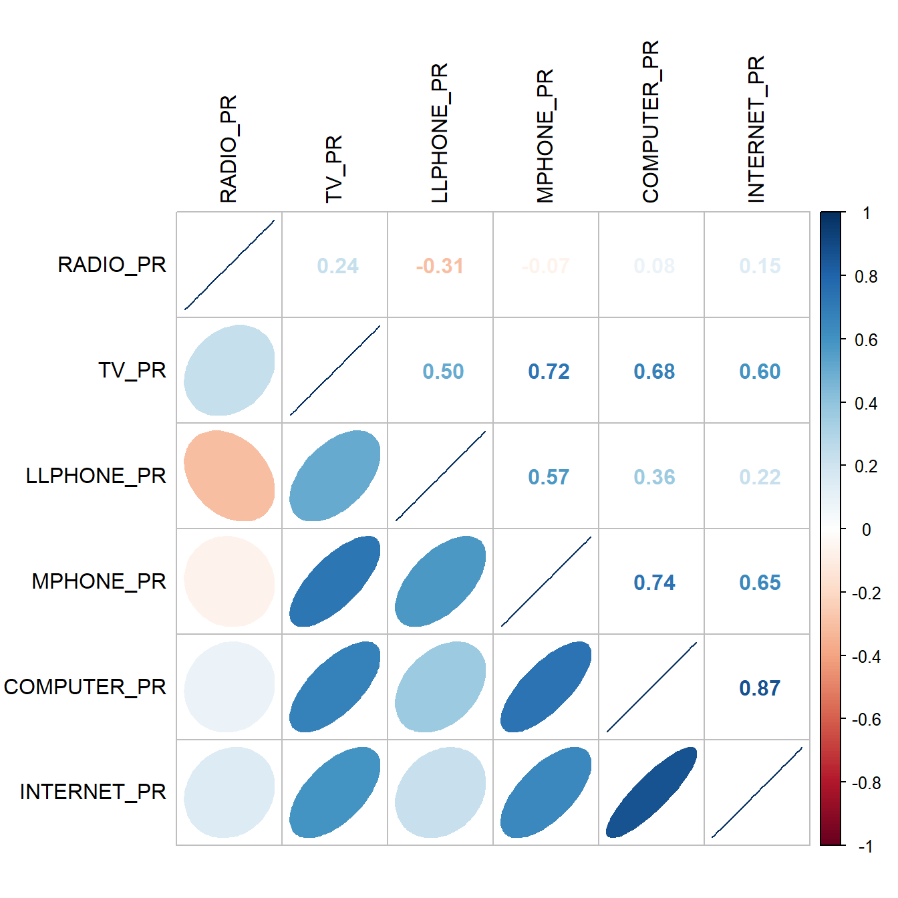
COMPUTER_PR and INTERNET_PR have the strongest correlation, 0.87, so I keep only one of them. Following the notes, I keep COMPUTER_PR. The next highest pairs are MPHONE_PR with COMPUTER_PR at 0.74 and TV_PR with MPHONE_PR at 0.72. They are high but well below 0.87, and the notes keep all of them.
Radio stands apart from the rest. Its correlation with the other rates ranges from -0.31 with land line phones to 0.24 with television. Radio is common in townships where the more modern items are rare, so it adds information the other variables do not have.
I dropped the geometry and kept the township name with the five clustering variables.
cluster_vars <- shan_sf %>%
st_set_geometry(NULL) %>%
select("TS.x", "RADIO_PR", "TV_PR", "LLPHONE_PR", "MPHONE_PR", "COMPUTER_PR")
head(cluster_vars,10) TS.x RADIO_PR TV_PR LLPHONE_PR MPHONE_PR COMPUTER_PR
1 Mongmit 286.1852 554.1313 35.30618 260.6944 12.15939
2 Pindaya 417.4647 505.1300 19.83584 162.3917 12.88190
3 Ywangan 484.5215 260.5734 11.93591 120.2856 4.41465
4 Pinlaung 231.6499 541.7189 28.54454 249.4903 13.76255
5 Mabein 449.4903 708.6423 72.75255 392.6089 16.45042
6 Kalaw 280.7624 611.6204 42.06478 408.7951 29.63160
7 Pekon 318.6118 535.8494 39.83270 214.8476 18.97032
8 Lawksawk 387.1017 630.0035 31.51366 320.5686 21.76677
9 Nawnghkio 349.3359 547.9456 38.44960 323.0201 15.76465
10 Kyaukme 210.9548 601.1773 39.58267 372.4930 30.94709INTERNET_PR is left out because of its correlation with COMPUTER_PR.
The clustering functions use row names as labels, so I replaced the row numbers with township names.
row.names(cluster_vars) <- cluster_vars$"TS.x"
head(cluster_vars,10) TS.x RADIO_PR TV_PR LLPHONE_PR MPHONE_PR COMPUTER_PR
Mongmit Mongmit 286.1852 554.1313 35.30618 260.6944 12.15939
Pindaya Pindaya 417.4647 505.1300 19.83584 162.3917 12.88190
Ywangan Ywangan 484.5215 260.5734 11.93591 120.2856 4.41465
Pinlaung Pinlaung 231.6499 541.7189 28.54454 249.4903 13.76255
Mabein Mabein 449.4903 708.6423 72.75255 392.6089 16.45042
Kalaw Kalaw 280.7624 611.6204 42.06478 408.7951 29.63160
Pekon Pekon 318.6118 535.8494 39.83270 214.8476 18.97032
Lawksawk Lawksawk 387.1017 630.0035 31.51366 320.5686 21.76677
Nawnghkio Nawnghkio 349.3359 547.9456 38.44960 323.0201 15.76465
Kyaukme Kyaukme 210.9548 601.1773 39.58267 372.4930 30.94709Then I dropped the TS.x column, since the name is now stored in the row names.
shan_ict <- select(cluster_vars, c(2:6))
head(shan_ict, 10) RADIO_PR TV_PR LLPHONE_PR MPHONE_PR COMPUTER_PR
Mongmit 286.1852 554.1313 35.30618 260.6944 12.15939
Pindaya 417.4647 505.1300 19.83584 162.3917 12.88190
Ywangan 484.5215 260.5734 11.93591 120.2856 4.41465
Pinlaung 231.6499 541.7189 28.54454 249.4903 13.76255
Mabein 449.4903 708.6423 72.75255 392.6089 16.45042
Kalaw 280.7624 611.6204 42.06478 408.7951 29.63160
Pekon 318.6118 535.8494 39.83270 214.8476 18.97032
Lawksawk 387.1017 630.0035 31.51366 320.5686 21.76677
Nawnghkio 349.3359 547.9456 38.44960 323.0201 15.76465
Kyaukme 210.9548 601.1773 39.58267 372.4930 30.94709The notes read shan_ict.rds at this point but never write it. I added the write_rds() so the file exists before read_rds() loads it.
write_rds(shan_ict, "data/rds/shan_ict.rds")
shan_ict <- read_rds("data/rds/shan_ict.rds")The five variables have very different ranges. Mobile phones run from 36 to 735 per thousand, and computers from 3 to 92. Without standardisation, a variable with a large range has more pull on the distances between townships. The notes show two ways to standardise.
normalize() from heatmaply rescales each variable to run from 0 to 1.
shan_ict.std <- normalize(shan_ict)
summary(shan_ict.std) RADIO_PR TV_PR LLPHONE_PR MPHONE_PR
Min. :0.0000 Min. :0.0000 Min. :0.0000 Min. :0.0000
1st Qu.:0.2544 1st Qu.:0.4600 1st Qu.:0.1123 1st Qu.:0.2199
Median :0.4097 Median :0.5523 Median :0.1948 Median :0.3846
Mean :0.4199 Mean :0.5416 Mean :0.2703 Mean :0.3972
3rd Qu.:0.5330 3rd Qu.:0.6750 3rd Qu.:0.3746 3rd Qu.:0.5608
Max. :1.0000 Max. :1.0000 Max. :1.0000 Max. :1.0000
COMPUTER_PR
Min. :0.00000
1st Qu.:0.09598
Median :0.17607
Mean :0.23692
3rd Qu.:0.29868
Max. :1.00000 Every variable now has a minimum of 0 and a maximum of 1. The means differ, from 0.24 for COMPUTER_PR to 0.54 for TV_PR, because the shape of each distribution is kept.
scale() subtracts the mean and divides by the standard deviation. I used describe() from psych instead of summary() because it reports the standard deviation as well.
shan_ict.z <- scale(shan_ict)
describe(shan_ict.z) vars n mean sd median trimmed mad min max range skew kurtosis
RADIO_PR 1 55 0 1 -0.04 -0.06 0.94 -1.85 2.55 4.40 0.48 -0.27
TV_PR 2 55 0 1 0.05 0.04 0.78 -2.47 2.09 4.56 -0.38 -0.23
LLPHONE_PR 3 55 0 1 -0.33 -0.15 0.68 -1.19 3.20 4.39 1.37 1.49
MPHONE_PR 4 55 0 1 -0.05 -0.06 1.01 -1.58 2.40 3.98 0.48 -0.34
COMPUTER_PR 5 55 0 1 -0.26 -0.18 0.64 -1.03 3.31 4.34 1.80 2.96
se
RADIO_PR 0.13
TV_PR 0.13
LLPHONE_PR 0.13
MPHONE_PR 0.13
COMPUTER_PR 0.13All five variables now have a mean of 0 and a standard deviation of 1. The skewness values are the same as before standardisation, 1.80 for COMPUTER_PR and 1.37 for LLPHONE_PR.
The notes warn that z-scores should only be used if the variables can be assumed to come from a normal distribution. COMPUTER_PR and LLPHONE_PR are clearly skewed, so a z-score of 3 means something different for them than for TV_PR. Min-max scaling makes no such assumption, but a single extreme value squeezes everyone else into a narrow part of the 0 to 1 range.
I compared the histogram of RADIO_PR before standardisation and after each method.
r <- ggplot(data=ict_derived,
aes(x= `RADIO_PR`)) +
geom_histogram(bins=20,
color="black",
fill="light blue") +
ggtitle("Raw values without standardisation")
shan_ict_s_df <- as.data.frame(shan_ict.std)
s <- ggplot(data=shan_ict_s_df,
aes(x=`RADIO_PR`)) +
geom_histogram(bins=20,
color="black",
fill="light blue") +
ggtitle("Min-Max Standardisation")
shan_ict_z_df <- as.data.frame(shan_ict.z)
z <- ggplot(data=shan_ict_z_df,
aes(x=`RADIO_PR`)) +
geom_histogram(bins=20,
color="black",
fill="light blue") +
ggtitle("Z-score Standardisation")
ggarrange(r, s, z,
ncol = 3,
nrow = 1)
r <- ggplot(data=ict_derived,
aes(x= `RADIO_PR`)) +
geom_density(color="black",
fill="light blue") +
ggtitle("Raw values without standardisation")
shan_ict_s_df <- as.data.frame(shan_ict.std)
s <- ggplot(data=shan_ict_s_df,
aes(x=`RADIO_PR`)) +
geom_density(color="black",
fill="light blue") +
ggtitle("Min-Max Standardisation")
shan_ict_z_df <- as.data.frame(shan_ict.z)
z <- ggplot(data=shan_ict_z_df,
aes(x=`RADIO_PR`)) +
geom_density(color="black",
fill="light blue") +
ggtitle("Z-score Standardisation")
ggarrange(r, s, z,
ncol = 3,
nrow = 1)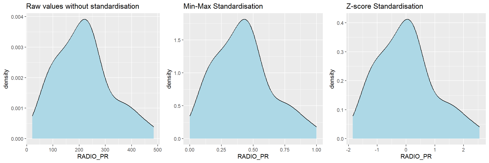
The course asks what statistical conclusion the histograms support. The three panels have the same shape and differ only in the numbers on the x axis. Both methods are linear transformations, so they change the location and scale of a variable but not its skewness or the relative positions of the townships. Standardisation evens out the weight of each variable in the distance calculation, and it does not make a skewed variable normal.
dist() supports six distance measures, euclidean, maximum, manhattan, canberra, binary and minkowski, with euclidean as the default. I computed the euclidean distance between every pair of townships.
proxmat <- dist(shan_ict, method = 'euclidean')proxmatThe printed matrix has 1,485 distances, one for each pair of the 55 townships, so I left it out of the rendered page.
The notes standardise the variables and then build proxmat from shan_ict, the raw rates. I followed the notes so that the results stay comparable, but I checked how much each variable contributes.
round(sapply(shan_ict, var) / sum(sapply(shan_ict, var)), 3) RADIO_PR TV_PR LLPHONE_PR MPHONE_PR COMPUTER_PR
0.160 0.366 0.024 0.444 0.006 MPHONE_PR and TV_PR together account for 81 percent of the total variance, and COMPUTER_PR for less than 1 percent. In the raw scale the clusters are mostly built from mobile phones and television. I come back to this at the end of Part 3.
hclust() supports eight agglomeration methods, ward.D, ward.D2, single, complete, average (UPGMA), mcquitty (WPGMA), median (WPGMC) and centroid (UPGMC). Following the notes, I used ward.D.
hclust_ward <- hclust(proxmat, method = 'ward.D')plot(hclust_ward, cex = 0.6)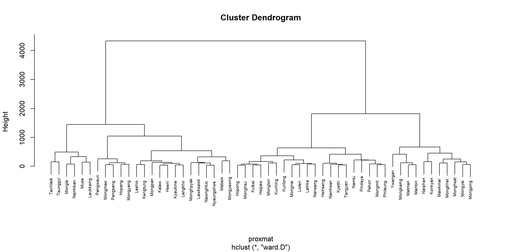
The tree has one very tall final merge at a height of about 4,336, which joins a group of 31 townships with a group of 24. Below that, the next merges happen at 1,820 and 1,443.
agnes() from cluster works like hclust() but also returns the agglomerative coefficient. It measures how strong the clustering structure is, and values closer to 1 mean a stronger structure. I computed it for four methods.
m <- c( "average", "single", "complete", "ward")
names(m) <- c( "average", "single", "complete", "ward")
ac <- function(x) {
agnes(shan_ict, method = x)$ac
}
map_dbl(m, ac) average single complete ward
0.8131144 0.6628705 0.8950702 0.9427730 Ward’s method has the highest coefficient at 0.943, ahead of complete linkage at 0.895, average at 0.813 and single linkage at 0.663. Single linkage chains townships one at a time, which gives the weakest structure. I use Ward’s method from here on.
The notes list three common methods for choosing the number of clusters, the elbow method, the average silhouette method and the gap statistic, and use the gap statistic.
The gap statistic compares the within cluster variation for each k with the value expected from data with no cluster structure. The best k is the one with the largest gap. clusGap() from cluster computes it, and hcut() from factoextra does the hierarchical clustering inside each run.
set.seed(12345)
gap_stat <- clusGap(shan_ict,
FUN = hcut,
nstart = 25,
K.max = 10,
B = 50)
# Print the result
print(gap_stat, method = "firstmax")Clustering Gap statistic ["clusGap"] from call:
clusGap(x = shan_ict, FUNcluster = hcut, K.max = 10, B = 50, nstart = 25)
B=50 simulated reference sets, k = 1..10; spaceH0="scaledPCA"
--> Number of clusters (method 'firstmax'): 1
logW E.logW gap SE.sim
[1,] 8.407129 8.680794 0.2736651 0.04460994
[2,] 8.130029 8.350712 0.2206824 0.03880130
[3,] 7.992265 8.202550 0.2102844 0.03362652
[4,] 7.862224 8.080655 0.2184311 0.03784781
[5,] 7.756461 7.978022 0.2215615 0.03897071
[6,] 7.665594 7.887777 0.2221833 0.03973087
[7,] 7.590919 7.806333 0.2154145 0.04054939
[8,] 7.526680 7.731619 0.2049390 0.04198644
[9,] 7.458024 7.660795 0.2027705 0.04421874
[10,] 7.377412 7.593858 0.2164465 0.04540947fviz_gap_stat(gap_stat)
The largest gap is at k = 1 (0.274), so the statistic suggests the townships form one group. That is not useful for segmentation. Among k from 2 to 10, the largest gap is at k = 6 (0.2222), which is why the notes choose six clusters.
The choice of six is weak. The gap at k = 5 is 0.2216 and at k = 4 is 0.2184, both within 0.004 of k = 6, while the standard error for each is about 0.04. Any k from 4 to 6 fits the data about equally well. I keep six so that the rest of the results can be compared with the notes.
The notes also mention NbClust, which reports 30 indices for the number of clusters and proposes the best scheme across combinations of distance measures and clustering methods. The exercise does not run it.
Each leaf of the dendrogram is one township. Similar townships are joined into branches lower down, and the height of a fusion shows how different the two groups are. Two townships can only be compared by the height at which their branches first join. Their positions along the horizontal axis say nothing about similarity.
rect.hclust() draws boxes around the six clusters. The notes give border = 2:5, which has only four colours, so two clusters would reuse colours. I gave it six.
plot(hclust_ward, cex = 0.6)
rect.hclust(hclust_ward,
k = 6,
border = 2:7)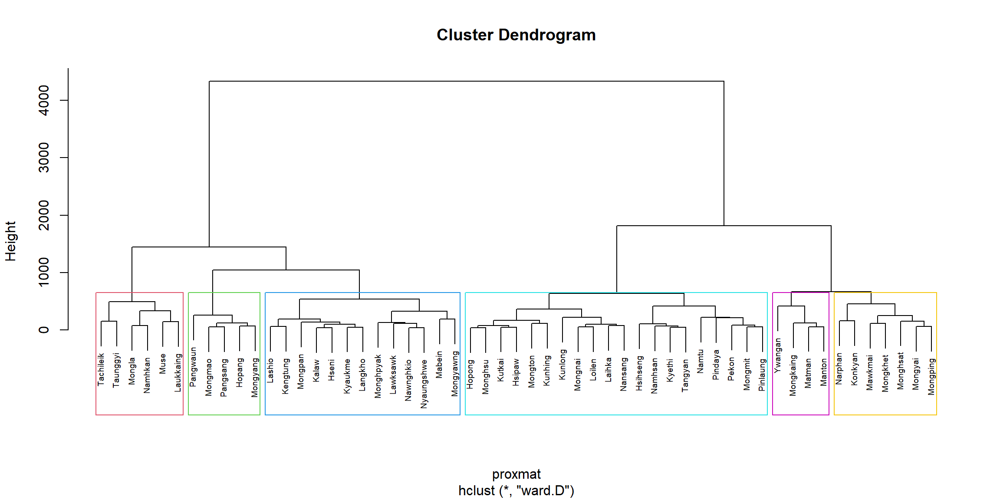
heatmaply combines the dendrogram with a heatmap of the variables, so the reason each township sits in its cluster can be read off the colours.
heatmaply() expects a matrix, so I converted the data frame first.
shan_ict_mat <- data.matrix(shan_ict)heatmaply(normalize(shan_ict_mat),
Colv=NA,
dist_method = "euclidean",
hclust_method = "ward.D",
seriate = "OLO",
colors = Blues,
k_row = 6,
margins = c(NA,200,60,NA),
fontsize_row = 4,
fontsize_col = 5,
main="Geographic Segmentation of Shan State by ICT indicators",
xlab = "ICT Indicators",
ylab = "Townships of Shan State"
)Hovering over a cell shows the township, the variable and its min-max value. This heatmap clusters the normalised values, so its six groups are not exactly the same as the ones from hclust_ward, which used the raw values. The darkest block, high on television, mobile phones and computers at once, holds the border trade towns Muse, Tachileik, Laukkaing and Mongla together with Taunggyi, Lashio, Kengtung and Pangsang.
I cut the tree into six clusters with cutree().
groups <- as.factor(cutree(hclust_ward, k=6))groups is a factor with one label per township. To map it, I converted it to a matrix, attached it to shan_sf with cbind() and renamed the new column to CLUSTER.
shan_sf_cluster <- cbind(shan_sf, as.matrix(groups)) %>%
rename(`CLUSTER`=`as.matrix.groups.`)qtm(shan_sf_cluster, "CLUSTER")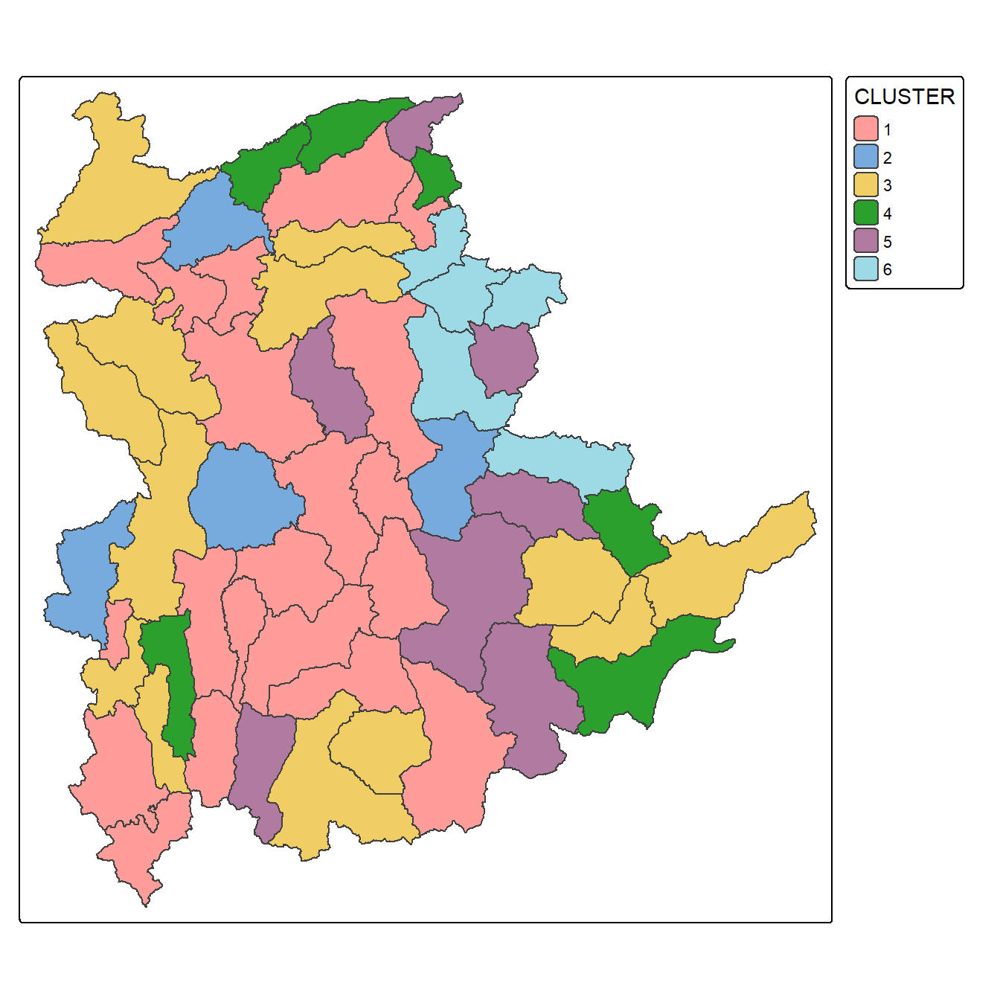
table(shan_sf_cluster$CLUSTER)
1 2 3 4 5 6
20 4 13 6 7 5 The clusters are very fragmented. I counted the number of separate pieces each cluster forms on the map, using the contiguity neighbour list from Part 4.
nb_check <- poly2nb(shan_sf)
count_pieces <- function(cl) {
sapply(sort(unique(cl)), function(g) {
suppressWarnings(n.comp.nb(subset(nb_check, cl == g)))$nc
})
}
count_pieces(shan_sf_cluster$CLUSTER)1 2 3 4 5 6
4 4 5 5 5 1 Five of the six clusters are split into four or five separate pieces. Only cluster 6 is one connected block, Mongmao, Pangsang, Hopang, Pangwaun and Mongyang in the Wa area along the Chinese border. This is the main limitation of a non-spatial method. Townships end up together because their ICT profiles match, whether or not they are anywhere near each other.
Since the raw scale gives MPHONE_PR and TV_PR most of the weight, I reran the same Ward clustering on the min-max values to see how much the grouping depends on that choice.
groups_std <- cutree(hclust(dist(shan_ict.std), method = "ward.D"), k = 6)
table(raw = groups, standardised = groups_std) standardised
raw 1 2 3 4 5 6
1 14 1 4 0 0 1
2 0 1 0 0 3 0
3 0 6 5 2 0 0
4 0 0 0 5 0 1
5 1 0 0 0 4 2
6 0 0 0 1 0 4The two solutions agree only in part. Cluster 1 from the raw values mostly stays together, but cluster 3 splits three ways and townships from cluster 5 spread across three groups. With the variables on equal terms, radio and land line phones get more say, and several townships change neighbours in the tree. The rest of this page follows the notes and uses the raw values.
Ward’s method gave the strongest structure, and the gap statistic pointed to six clusters only by a very small margin over four or five. The six clusters make sense in ICT terms, with a border town group high on almost everything and a Wa group with very little radio. On the map they are scattered across Shan State. I also learned that leaving the variables unscaled hands most of the decision to mobile phones and television.
SKATER (Spatial ’K’luster Analysis by Tree Edge Removal) only allows neighbouring townships to join the same cluster. It links all townships in a minimum spanning tree, where each link is between two neighbours, and then cuts the tree into pieces. Each piece is one cluster and is contiguous by construction.
The notes convert shan_sf into an sp object because older versions of the SKATER functions only accepted sp.
shan_sp <- as_Spatial(shan_sf)Current versions of spdep accept sf objects in poly2nb(). I ran poly2nb() on both shan_sf and shan_sp and got identical neighbour lists, so the conversion is no longer needed. I kept it to follow the notes.
shan.nb <- poly2nb(shan_sp)
summary(shan.nb)Neighbour list object:
Number of regions: 55
Number of nonzero links: 264
Percentage nonzero weights: 8.727273
Average number of links: 4.8
Link number distribution:
2 3 4 5 6 7 8 9
5 9 7 21 4 3 5 1
5 least connected regions:
3 5 7 9 47 with 2 links
1 most connected region:
8 with 9 linksThe 55 townships have 264 neighbour links, an average of 4.8 each. Five townships have only two neighbours, regions 3, 5, 7, 9 and 47, which are Ywangan, Mabein, Pekon, Nawnghkio and Pangwaun. Region 8, Lawksawk, has the most with nine.
I plotted the network on top of the township boundaries. The boundaries go first, since the first plot sets the extent and the network would otherwise clip parts of the map. The centroids of the polygons serve as the nodes.
coords <- st_coordinates(
st_centroid(st_geometry(shan_sf)))
plot(st_geometry(shan_sf),
border=grey(.5))
plot(shan.nb,
coords,
col="blue",
add=TRUE)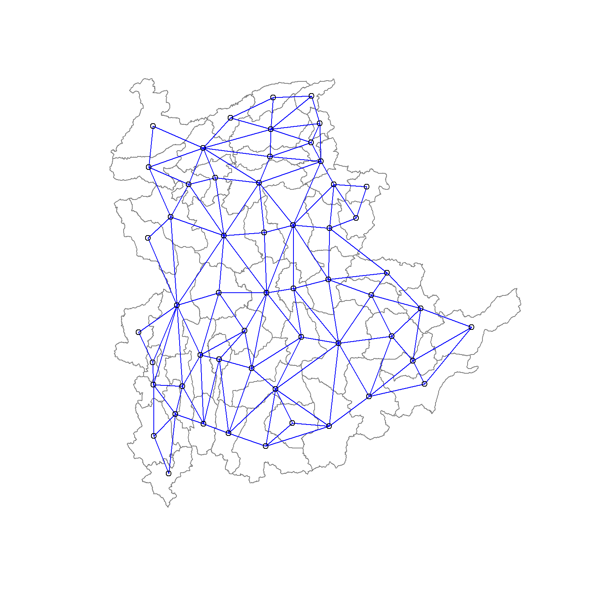
nbcosts() gives each neighbour link a cost, the euclidean distance between the two townships in the five ICT variables. A low cost means two neighbours have similar profiles.
lcosts <- nbcosts(shan.nb, shan_ict)I then turned the neighbour list into a weights object with these costs as the weights. Style "B" keeps the costs as they are, without row standardisation.
shan.w <- nb2listw(shan.nb,
lcosts,
style="B")
summary(shan.w)Characteristics of weights list object:
Neighbour list object:
Number of regions: 55
Number of nonzero links: 264
Percentage nonzero weights: 8.727273
Average number of links: 4.8
Link number distribution:
2 3 4 5 6 7 8 9
5 9 7 21 4 3 5 1
5 least connected regions:
3 5 7 9 47 with 2 links
1 most connected region:
8 with 9 links
Weights style: B
Weights constants summary:
n nn S0 S1 S2
B 55 3025 76267.65 58260785 522016004S0, the sum of all weights, is 76,268. Each link appears twice in the list, once in each direction, so this is twice the total cost of the 132 links.
mstree() finds the set of 54 links that connects all 55 townships with the lowest total cost.
set.seed(1234)
shan.mst <- mstree(shan.w)class(shan.mst)[1] "mst" "matrix"dim(shan.mst)[1] 54 3The tree has 54 rows, one fewer than the number of townships, since a spanning tree on n nodes always has n minus 1 edges. Each row holds the two townships at the ends of an edge and its cost.
head(shan.mst) [,1] [,2] [,3]
[1,] 28 12 78.78999
[2,] 12 49 59.69478
[3,] 28 13 92.79567
[4,] 13 52 110.55197
[5,] 49 35 124.74445
[6,] 35 37 91.65458My first rows do not match the notes, which start with townships 54 and 48. mstree() picks a random starting township when ini is not given, and the order of the rows follows the order in which the tree grows. I built the tree from two different seeds and got exactly the same 54 edges with the same total cost of 9,686.6 both times. Only the order changes, and SKATER gives the same clusters as the notes. I added set.seed() so the output above stays the same on every render.
plot(st_geometry(shan_sf),
border=gray(.5))
plot.mst(shan.mst,
coords,
col="blue",
cex.lab=0.7,
cex.circles=0.005,
add=TRUE)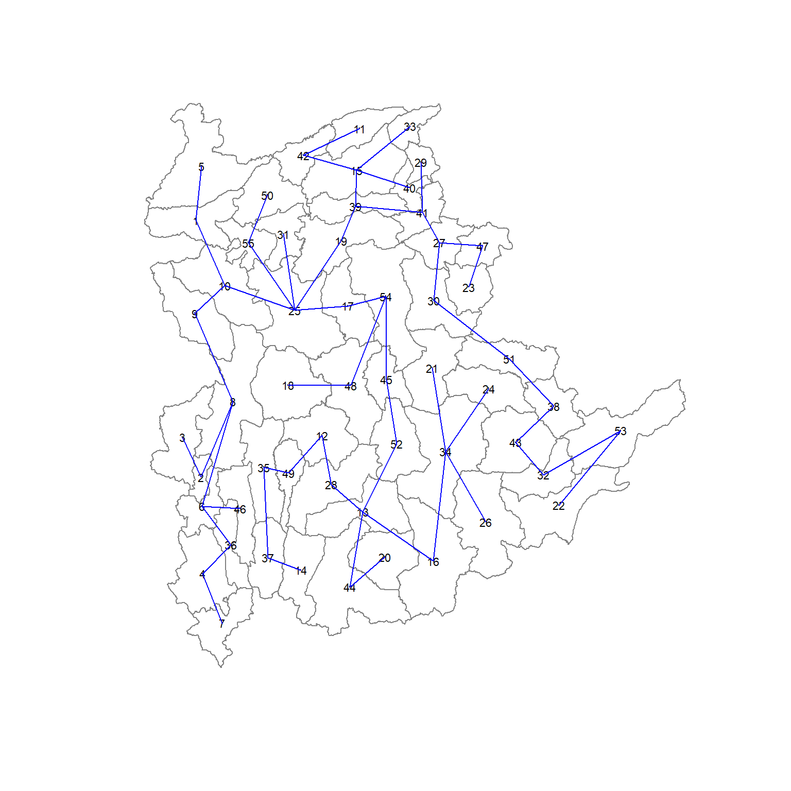
Compared with the neighbour network, each township now has only the links needed to keep the tree connected, and there are no loops.
skater() takes the two node columns of the tree, the data used to update the costs as groups form, and the number of cuts. Six clusters need five cuts.
clust6 <- spdep::skater(edges = shan.mst[,1:2],
data = shan_ict,
method = "euclidean",
ncuts = 5)str(clust6)List of 8
$ groups : num [1:55] 3 3 6 3 3 3 3 3 3 3 ...
$ edges.groups:List of 6
..$ :List of 3
.. ..$ node: num [1:22] 13 48 45 55 52 37 34 16 25 54 ...
.. ..$ edge: num [1:21, 1:3] 48 55 45 37 34 16 52 25 13 28 ...
.. ..$ ssw : num 3423
..$ :List of 3
.. ..$ node: num [1:18] 47 27 53 38 42 15 41 51 43 32 ...
.. ..$ edge: num [1:17, 1:3] 53 15 42 38 41 51 15 27 15 43 ...
.. ..$ ssw : num 3759
..$ :List of 3
.. ..$ node: num [1:11] 2 6 8 1 36 4 10 9 46 5 ...
.. ..$ edge: num [1:10, 1:3] 6 1 8 36 4 6 8 10 10 9 ...
.. ..$ ssw : num 1458
..$ :List of 3
.. ..$ node: num [1:2] 44 20
.. ..$ edge: num [1, 1:3] 44 20 95
.. ..$ ssw : num 95
..$ :List of 3
.. ..$ node: num 23
.. ..$ edge: num[0 , 1:3]
.. ..$ ssw : num 0
..$ :List of 3
.. ..$ node: num 3
.. ..$ edge: num[0 , 1:3]
.. ..$ ssw : num 0
$ not.prune : NULL
$ candidates : int [1:6] 1 2 3 4 5 6
$ ssto : num 12613
$ ssw : num [1:6] 12613 10977 9962 9540 9123 ...
$ crit : num [1:2] 1 Inf
$ vec.crit : num [1:55] 1 1 1 1 1 1 1 1 1 1 ...
- attr(*, "class")= chr "skater"groups holds the cluster label of each township. edges.groups describes each cluster with its nodes, edges and within cluster sum of squares (ssw). ssto is the total sum of squares, and ssw at the top level records the criterion after each cut.
ccs6 <- clust6$groups
ccs6 [1] 3 3 6 3 3 3 3 3 3 3 2 1 1 1 2 1 1 1 2 4 1 2 5 1 1 1 2 1 2 2 1 2 2 1 1 3 1 2
[39] 2 2 2 2 2 4 1 3 2 1 1 1 2 1 2 1 1table(ccs6)ccs6
1 2 3 4 5 6
22 18 11 2 1 1 The six clusters have 22, 18, 11, 2, 1 and 1 townships. The notes say the first cluster has 12 nodes, but the node vector of the first element of edges.groups has length 22, matching the table.
round(clust6$ssw)[1] 12613 10977 9962 9540 9123 8735The first cut does most of the work. It lowers the criterion from 12,613 to 10,977, and each later cut takes off only between about 390 and 1,020. The last three cuts remove small branches, which is why cluster 4 has two townships and clusters 5 and 6 one each.
shan_sf %>%
st_drop_geometry() %>%
mutate(SP_CLUSTER = ccs6) %>%
filter(SP_CLUSTER %in% 4:6) %>%
select(SP_CLUSTER, TS.x, RADIO_PR, TV_PR, LLPHONE_PR, MPHONE_PR, COMPUTER_PR) %>%
arrange(SP_CLUSTER) SP_CLUSTER TS.x RADIO_PR TV_PR LLPHONE_PR MPHONE_PR COMPUTER_PR
1 4 Mongpan 228.74008 517.2477 21.58273 437.7421 46.485888
2 4 Langkho 227.46781 587.1483 74.39199 403.9103 32.308059
3 5 Narphan 75.27012 210.0886 42.18769 305.2689 3.277892
4 6 Ywangan 484.52147 260.5734 11.93591 120.2856 4.414650The singletons are extreme townships. Ywangan has the highest radio rate in the state and the sixth lowest television rate. Narphan has the lowest computer rate in the state and the third lowest television rate. The tree can only isolate them by cutting them off, since every possible region around them would contain townships unlike them.
I plotted the pruned tree on the map. The notes give five colours for six groups, so I added a sixth.
plot(st_geometry(shan_sf),
border=gray(.5))
plot(clust6,
coords,
cex.lab=.7,
groups.colors=c("red","green","blue", "brown", "pink", "orange"),
cex.circles=0.005,
add=TRUE)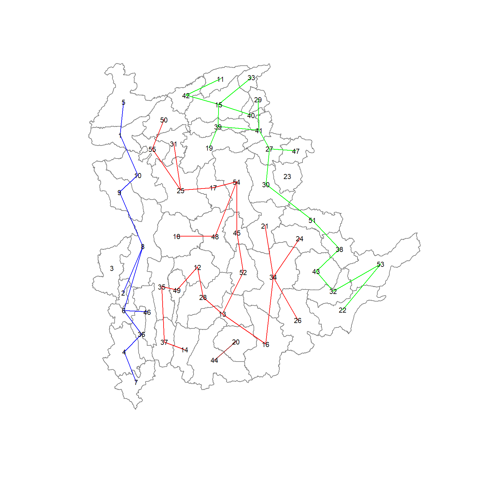
groups_mat <- as.matrix(clust6$groups)
shan_sf_spatialcluster <- cbind(shan_sf_cluster, as.factor(groups_mat)) %>%
rename(`SP_CLUSTER`=`as.factor.groups_mat.`)
qtm(shan_sf_spatialcluster, "SP_CLUSTER")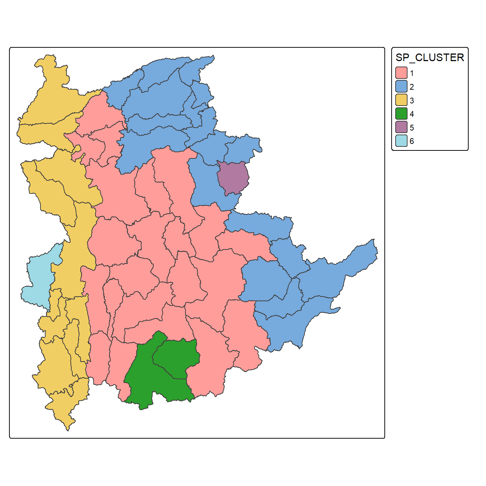
For comparison I put the hierarchical clusters and the SKATER clusters side by side.
hclust.map <- qtm(shan_sf_cluster,
"CLUSTER") +
tm_borders(col_alpha = 0.5)
shclust.map <- qtm(shan_sf_spatialcluster,
"SP_CLUSTER") +
tm_borders(col_alpha = 0.5)
tmap_arrange(hclust.map, shclust.map,
asp=NA, ncol=2)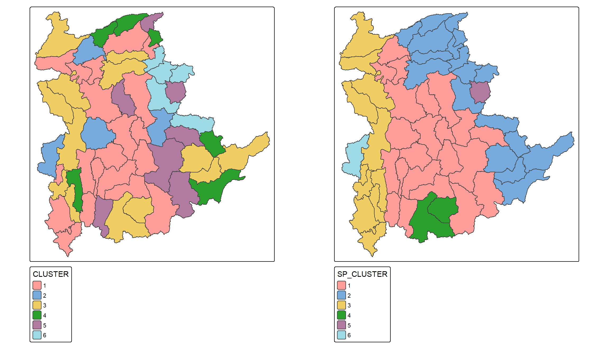
Every SKATER cluster is one connected region. Cluster 1 covers the central and southern belt from Hsipaw down through Loilen to Monghsat. Cluster 2 runs along the whole eastern border from Muse and Lashio to Tachileik and Kengtung. Cluster 3 is the western edge from Mongmit down to Pinlaung, including Taunggyi.
shan_sf_spatialcluster %>%
st_drop_geometry() %>%
group_by(SP_CLUSTER) %>%
summarise(n = n(),
mean_RADIO_PR = mean(RADIO_PR),
mean_TV_PR = mean(TV_PR),
mean_LLPHONE_PR = mean(LLPHONE_PR),
mean_MPHONE_PR = mean(MPHONE_PR),
mean_COMPUTER_PR = mean(COMPUTER_PR))# A tibble: 6 × 7
SP_CLUSTER n mean_RADIO_PR mean_TV_PR mean_LLPHONE_PR mean_MPHONE_PR
<fct> <int> <dbl> <dbl> <dbl> <dbl>
1 1 22 186. 416. 26.1 173.
2 2 18 174. 597. 91.0 476.
3 3 11 329. 595. 40.8 331.
4 4 2 228. 552. 48.0 421.
5 5 1 75.3 210. 42.2 305.
6 6 1 485. 261. 11.9 120.
# ℹ 1 more variable: mean_COMPUTER_PR <dbl>The three large regions have clear profiles. Among them, the eastern border region (cluster 2) has the highest land line, mobile phone and computer rates but the lowest radio rate, 174 per thousand. The western region (cluster 3) has the highest radio rate at 329 and fairly high television. The central belt (cluster 1) is lowest of the three on television, mobile phones and computers.
The price of contiguity shows in the spread within clusters. Cluster 2 joins the border towns of Muse and Tachileik with the Wa townships of Pangsang and Mongmao because they lie on the same border, even though hierarchical clustering put them in different groups. I measured the share of total variance explained by each solution with a small helper.
r_squared <- function(cl) {
x <- as.matrix(shan_ict)
tss <- sum(sweep(x, 2, colMeans(x))^2)
wss <- sum(sapply(unique(cl), function(g) {
xg <- x[cl == g, , drop = FALSE]
sum(sweep(xg, 2, colMeans(xg))^2)
}))
1 - wss / tss
}
c(hclust = r_squared(shan_sf_cluster$CLUSTER),
skater = r_squared(ccs6)) hclust skater
0.7610272 0.4998530 The hierarchical clusters explain 76 percent of the variance in the five variables, and the SKATER clusters only 50 percent.
SKATER turned the scattered pieces into three large connected regions, west, centre and eastern border, plus three tiny clusters for townships too unusual to fit anywhere. That contiguity cost a lot of homogeneity, with the explained variance falling from 76 to 50 percent. Asking for six clusters did not give six useful regions here, because three of the five cuts went into trimming outliers.
ClustGeo offers a softer constraint. Its hclustgeo() function runs a Ward-like hierarchical clustering on two dissimilarity matrices at once. D0 holds the differences in the clustering variables and D1 holds the differences in space. A mixing parameter alpha between 0 and 1 sets the balance. At alpha = 0 only D0 counts, and at alpha = 1 only geography counts. The aim is to find an alpha that makes the clusters more compact on the map without losing too much homogeneity in the variables, and choicealpha() helps with that.
With only D0, hclustgeo() is an ordinary Ward clustering. D0 has to be a dist object, so I reused proxmat.
nongeo_cluster <- hclustgeo(proxmat)
plot(nongeo_cluster, cex = 0.5)
rect.hclust(nongeo_cluster,
k = 6,
border = 2:7)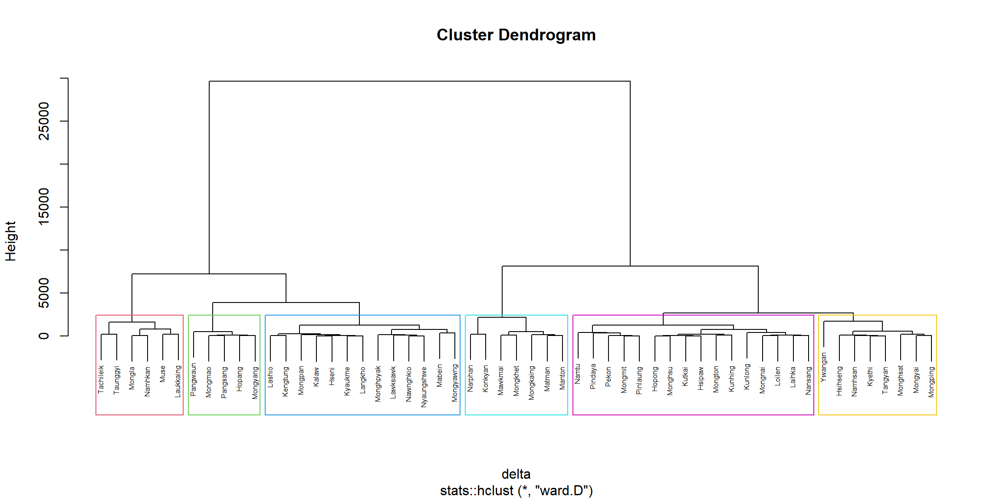
groups <- as.factor(cutree(nongeo_cluster, k=6))
shan_sf_ngeo_cluster <- cbind(shan_sf, as.matrix(groups)) %>%
rename(`CLUSTER` = `as.matrix.groups.`)
qtm(shan_sf_ngeo_cluster, "CLUSTER")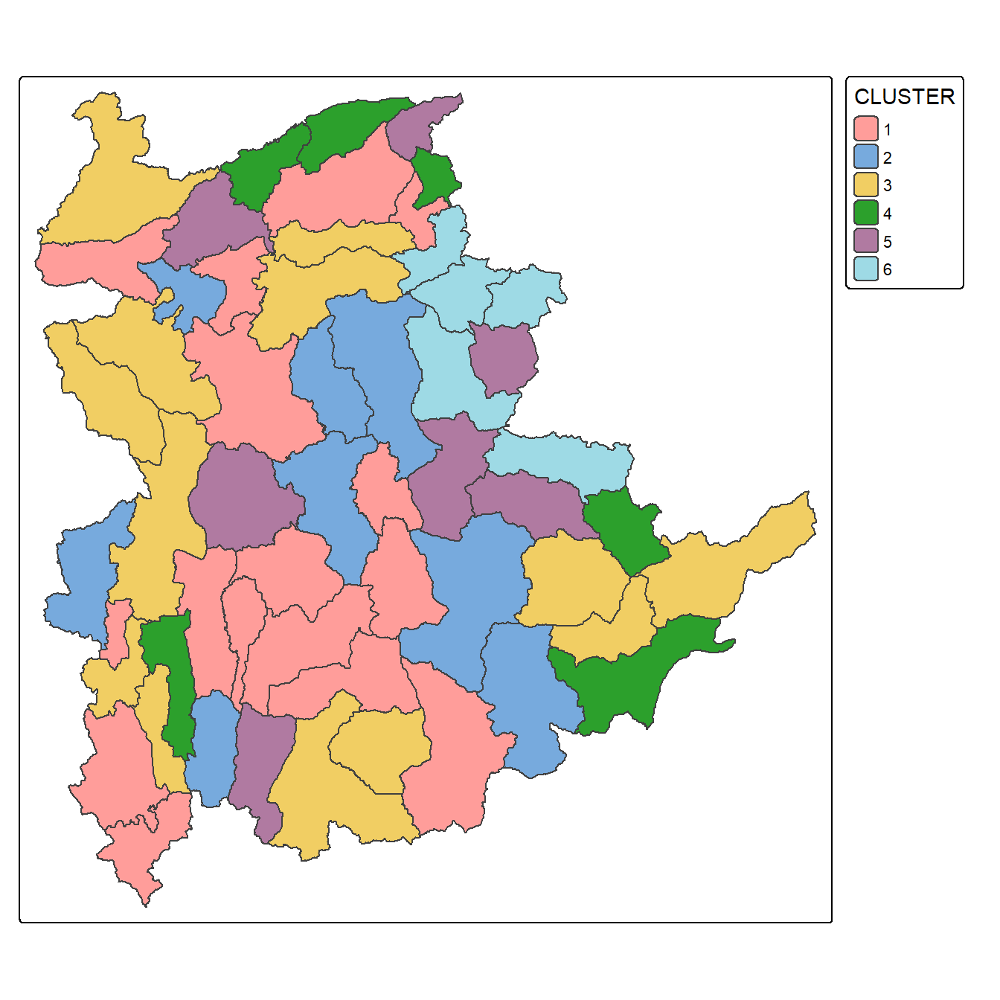
This map is close to the hclust() map from Part 3 but not the same.
table(hclustgeo = shan_sf_ngeo_cluster$CLUSTER,
hclust_ward.D = shan_sf_cluster$CLUSTER) hclust_ward.D
hclustgeo 1 2 3 4 5 6
1 16 0 0 0 0 0
2 4 1 0 0 3 0
3 0 0 13 0 0 0
4 0 0 0 6 0 0
5 0 3 0 0 4 0
6 0 0 0 0 0 5Clusters 3, 4 and 6 are identical, and eight townships move between clusters 1, 2 and 5.
hclustgeo() applies Ward’s criterion to squared distances, which is what hclust() calls ward.D2. I ran hclust(proxmat, method = "ward.D2") and got exactly the same six clusters as hclustgeo(proxmat). The difference above comes from Part 3 using ward.D. The agnes() coefficient of 0.943 also belongs to ward.D2, since agnes(method = "ward") gives the same tree as ward.D2.
count_pieces(shan_sf_ngeo_cluster$CLUSTER)1 2 3 4 5 6
6 5 5 5 6 1 Without the spatial term these clusters are just as fragmented as before, with only cluster 6 in one piece.
D1 is the distance between townships. st_distance() returns a matrix of distances between polygons, and as.dist() turns it into a dist object.
dist <- st_distance(shan_sf, shan_sf)
distmat <- as.dist(dist)st_distance() measures from boundary to boundary, so the 132 pairs of townships that share a border all have a distance of 0. The longest distance is about 444 km.
choicealpha() runs the clustering for alpha from 0 to 1 in steps of 0.1 and reports how homogeneous the six clusters are in each space.
cr <- choicealpha(proxmat, distmat, range.alpha = seq(0, 1, 0.1), K=6, graph = TRUE)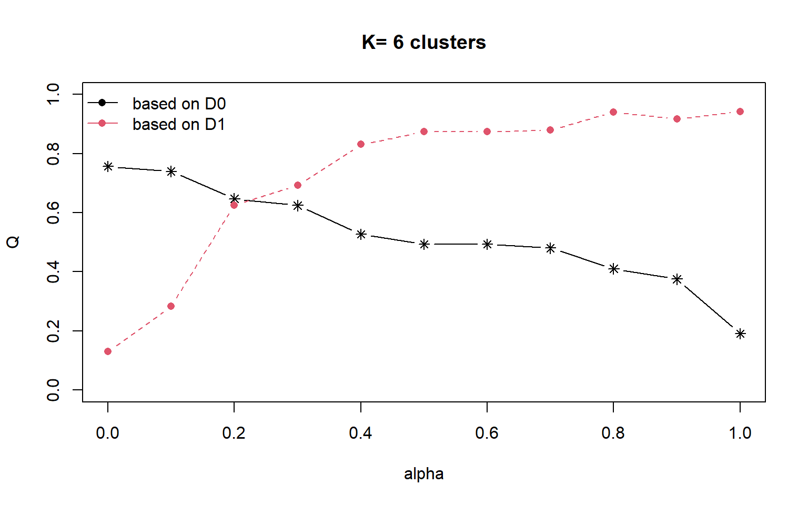
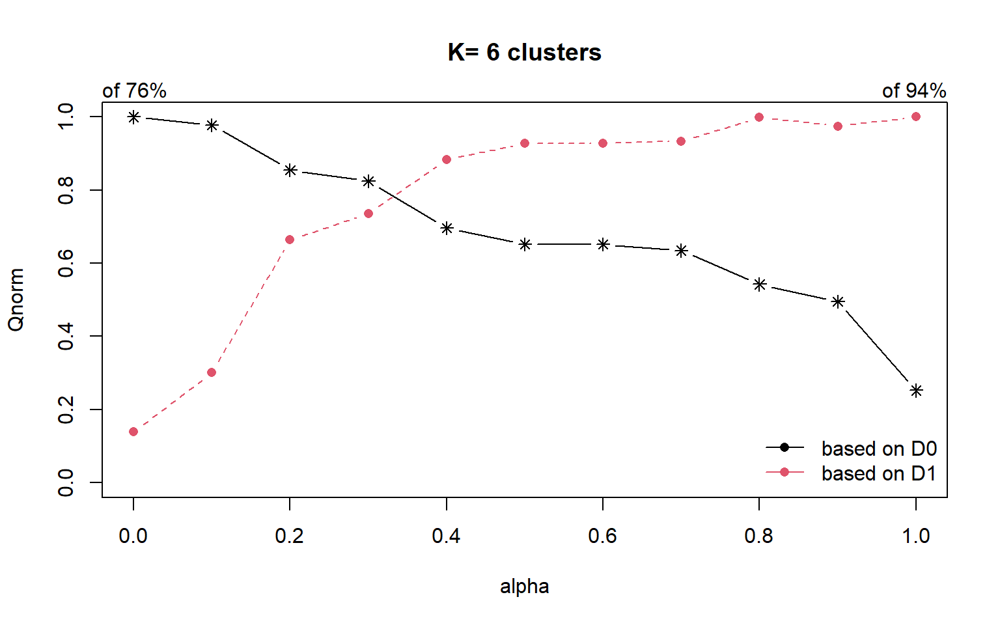
round(cbind(cr$Q, cr$Qnorm), 3) Q0 Q1 Q0norm Q1norm
alpha=0 0.757 0.131 1.000 0.139
alpha=0.1 0.740 0.284 0.978 0.301
alpha=0.2 0.647 0.626 0.855 0.665
alpha=0.3 0.624 0.692 0.825 0.735
alpha=0.4 0.527 0.831 0.697 0.882
alpha=0.5 0.493 0.874 0.652 0.928
alpha=0.6 0.493 0.874 0.652 0.928
alpha=0.7 0.480 0.879 0.635 0.934
alpha=0.8 0.411 0.940 0.543 0.999
alpha=0.9 0.375 0.918 0.496 0.975
alpha=1 0.191 0.941 0.252 1.000Q0 measures homogeneity in the ICT variables and Q1 in space, and the normalised versions are scaled to 1 at their best. At alpha = 0, Q0 is 0.757 and Q1 only 0.131. Moving to alpha = 0.2 raises Q1 to 0.626 while Q0 falls to 0.647, or 85 percent of its maximum. Beyond 0.2 the trade gets worse. Alpha = 0.4 gains another 0.2 in normalised Q1 but loses 0.16 in normalised Q0. Following the notes, I use alpha = 0.2.
clustG <- hclustgeo(proxmat, distmat, alpha = 0.2)groups <- as.factor(cutree(clustG, k=6))shan_sf_Gcluster <- cbind(shan_sf, as.matrix(groups)) %>%
rename(`CLUSTER` = `as.matrix.groups.`)qtm(shan_sf_Gcluster, "CLUSTER")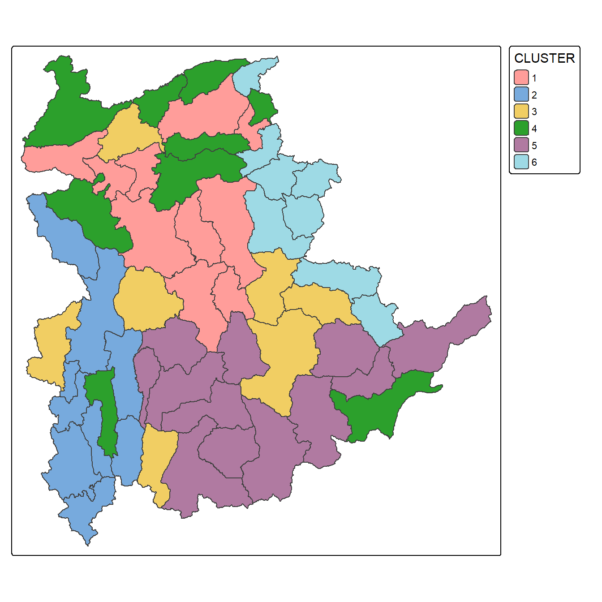
table(shan_sf_Gcluster$CLUSTER)
1 2 3 4 5 6
10 9 7 9 12 8 count_pieces(shan_sf_Gcluster$CLUSTER)1 2 3 4 5 6
2 1 5 7 1 2 The six clusters are more balanced in size than SKATER’s, from 7 to 12 townships, and more compact than the non-spatial ones. Clusters 2 and 5 are fully connected, and clusters 1 and 6 form two pieces each. ClustGeo does not force contiguity, though. Cluster 3 still has five pieces and cluster 4 is spread over seven.
shan_sf_Gcluster %>%
st_drop_geometry() %>%
filter(CLUSTER == "4") %>%
pull(TS.x)[1] "Mabein" "Kyaukme" "Muse" "Lashio" "Tachileik" "Laukkaing"
[7] "Hseni" "Namhkan" "Taunggyi" Cluster 4 holds the main towns of the state, Taunggyi, Lashio, Kyaukme, Muse, Namhkan, Laukkaing, Tachileik, Hseni and Mabein. Their ICT profiles are so close to each other, and so far from the townships around them, that a spatial weight of 0.2 is not enough to split the group by location. For a planning map this group reads as an urban type, and it would need a separate treatment from the regions around it.
I put the four solutions side by side and compared how much variance each explains.
tmap_arrange(qtm(shan_sf_cluster, "CLUSTER") + tm_title("hclust, ward.D"),
qtm(shan_sf_ngeo_cluster, "CLUSTER") + tm_title("ClustGeo, alpha = 0"),
qtm(shan_sf_spatialcluster, "SP_CLUSTER") + tm_title("SKATER"),
qtm(shan_sf_Gcluster, "CLUSTER") + tm_title("ClustGeo, alpha = 0.2"),
ncol = 2)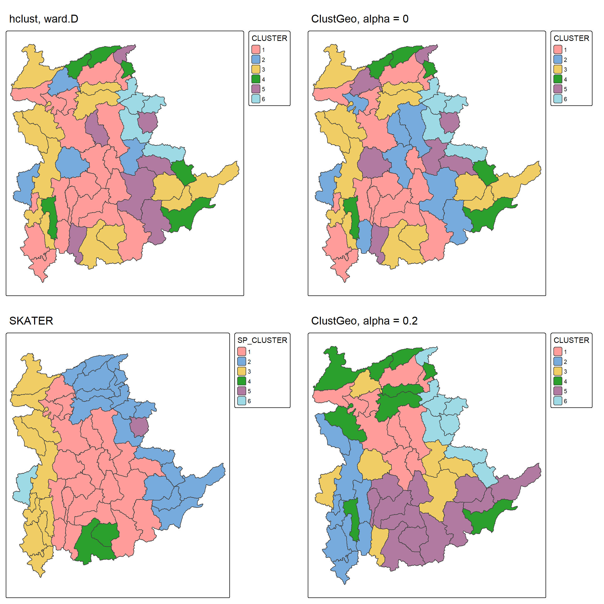
tibble(method = c("hclust ward.D", "ClustGeo alpha = 0", "ClustGeo alpha = 0.2", "SKATER"),
r_squared = c(r_squared(shan_sf_cluster$CLUSTER),
r_squared(shan_sf_ngeo_cluster$CLUSTER),
r_squared(shan_sf_Gcluster$CLUSTER),
r_squared(shan_sf_spatialcluster$SP_CLUSTER)),
pieces_on_map = c(sum(count_pieces(shan_sf_cluster$CLUSTER)),
sum(count_pieces(shan_sf_ngeo_cluster$CLUSTER)),
sum(count_pieces(shan_sf_Gcluster$CLUSTER)),
sum(count_pieces(shan_sf_spatialcluster$SP_CLUSTER)))) %>%
mutate(r_squared = round(r_squared, 3))# A tibble: 4 × 3
method r_squared pieces_on_map
<chr> <dbl> <dbl>
1 hclust ward.D 0.761 24
2 ClustGeo alpha = 0 0.757 28
3 ClustGeo alpha = 0.2 0.647 18
4 SKATER 0.5 6The two non-spatial solutions explain about 76 percent of the variance and break into 24 and 28 pieces on the map. ClustGeo with alpha = 0.2 explains 65 percent with 18 pieces, and SKATER explains 50 percent with exactly 6. ClustGeo sits between the two extremes, which is what the mixing parameter is for.
ClustGeo gave me a dial between homogeneity and compactness, and choicealpha() made the trade visible. At alpha = 0.2 most regions became compact while keeping 85 percent of the homogeneity. It also showed something SKATER hides, a group of main towns spread across the state that are more like each other than like their neighbours.
The notes profile the clusters from shan_sf_ngeo_cluster, the ClustGeo solution with alpha = 0, so I used the same object.
ggplot(data = shan_sf_ngeo_cluster,
aes(x = CLUSTER, y = RADIO_PR)) +
geom_boxplot()
Cluster 3 has the highest radio ownership, with a median of 278 households per thousand. Cluster 2 follows at 227 and cluster 1 at 205. Cluster 4 is lower at 155, and clusters 5 and 6 are lowest, both with a median of 97.
The notes rank the clusters 3, 2, 1, 4, 6 and 5 by mean radio ownership. The means in the summary table at the end of the notes, which I reproduce below, give 3, 2, 1, 4, 5 and 6, with cluster 5 at 124 and cluster 6 at 98.6. The boxplot shows medians, and on medians clusters 5 and 6 are tied.
A parallel coordinate plot shows all five variables at once, with one line per township. ggparcoord() from GGally draws it, and facet_grid() gives each cluster its own panel. Columns 17 to 21 of shan_sf_ngeo_cluster are the five clustering variables.
ggparcoord(data = shan_sf_ngeo_cluster,
columns = c(17:21),
scale = "globalminmax",
alphaLines = 0.2,
boxplot = TRUE,
title = "Multiple Parallel Coordinates Plots of ICT Variables by Cluster") +
facet_grid(~ CLUSTER) +
theme(axis.text.x = element_text(angle = 30))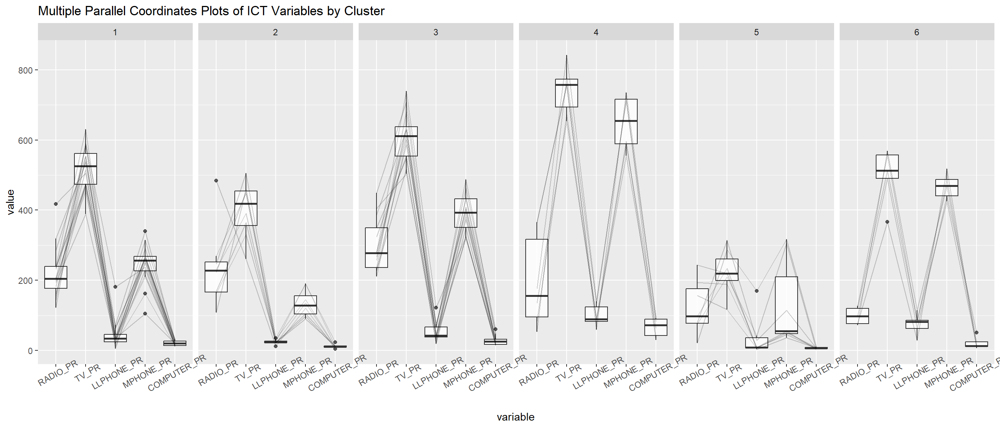
Cluster 4 stands out with the highest television and mobile phone ownership, and it also leads on land lines and computers. These are the six border and trade towns, Muse, Tachileik, Laukkaing, Mongla, Namhkan and Taunggyi.
Cluster 5 has the lowest television, mobile phone and computer rates of all six clusters. The notes say it is lowest on all five items, but cluster 6 has less radio and cluster 2 has fewer land lines.
scale = "globalminmax" draws the raw values on one shared axis. ggparcoord() offers five other options. std subtracts the mean and divides by the standard deviation, and robust subtracts the median and divides by the median absolute deviation. uniminmax rescales each variable to run from 0 to 1. center applies uniminmax and then centres each variable on a summary value set by scaleSummary, and centerObs does the same around one chosen observation set by centerObsID.
With globalminmax, television and mobile phones fill most of the height and computers are squashed along the bottom. I also drew the same plot with uniminmax, which puts every variable on the same 0 to 1 range.
ggparcoord(data = shan_sf_ngeo_cluster,
columns = c(17:21),
scale = "uniminmax",
alphaLines = 0.2,
boxplot = TRUE,
title = "Parallel Coordinates Plots of ICT Variables by Cluster, uniminmax scale") +
facet_grid(~ CLUSTER) +
theme(axis.text.x = element_text(angle = 30))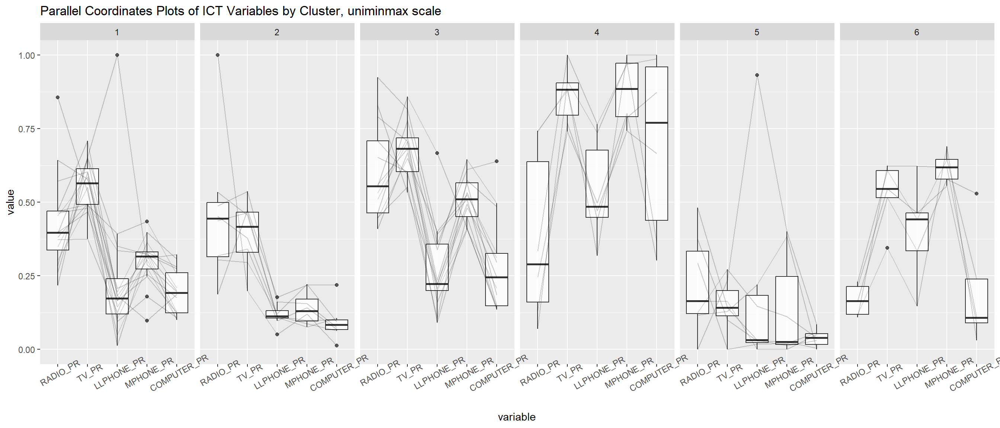
On this scale the computer rate of cluster 4 becomes visible, and so does the land line profile of cluster 6, which sits fairly high even though its radio rate is the lowest. No scale is best for every purpose, and switching between them helped me read the clusters.
I computed the mean of each clustering variable by cluster to back up the plots.
shan_sf_ngeo_cluster %>%
st_set_geometry(NULL) %>%
group_by(CLUSTER) %>%
summarise(mean_RADIO_PR = mean(RADIO_PR),
mean_TV_PR = mean(TV_PR),
mean_LLPHONE_PR = mean(LLPHONE_PR),
mean_MPHONE_PR = mean(MPHONE_PR),
mean_COMPUTER_PR = mean(COMPUTER_PR))# A tibble: 6 × 6
CLUSTER mean_RADIO_PR mean_TV_PR mean_LLPHONE_PR mean_MPHONE_PR
<chr> <dbl> <dbl> <dbl> <dbl>
1 1 221. 521. 44.2 246.
2 2 237. 402. 23.9 134.
3 3 300. 611. 52.2 392.
4 4 196. 744. 99.0 651.
5 5 124. 224. 38.0 132.
6 6 98.6 499. 74.5 468.
# ℹ 1 more variable: mean_COMPUTER_PR <dbl>The six clusters can be read as six ICT profiles. Cluster 4 is the connected urban group, with 744 televisions and 651 mobile phones per thousand households and a computer rate of 65.5. Cluster 3 has the most radios (300) and fairly high television (611). Cluster 6, the Wa townships, has the fewest radios (98.6) but relatively high land line and mobile phone ownership. Cluster 5 is the least connected group, with 224 televisions, 132 mobile phones and 6.7 computers per thousand. Clusters 1 and 2 sit in between, with cluster 2 especially low on land lines (23.9).
The five ICT rates group Shan State’s 55 townships into six profiles that range from a connected urban group to a group with very low ownership of every item. Without a spatial constraint these profiles are scattered across the state in 24 to 28 separate pieces. SKATER produced three connected regions, west, centre and eastern border, plus three outlier clusters, at the cost of explaining only 50 percent of the variance. ClustGeo with alpha = 0.2 kept 65 percent, made most clusters compact, and left the main towns together as one scattered urban group.